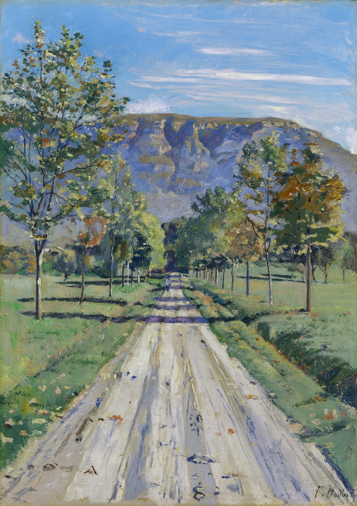

Фердинанд ХодлерDie Strasse nach Evordes (Дорога в Эвордес), 1890 Холст масло 62,5 x 44,5 см🏛 Винтертурский художественный музей, ВинтертурИсточник: https://kmw.zetcom.net/en/collection/item/18043/2025-07-12#hodler #kmw #картина